Theory¶
Finite Volume Methods for Euler’s Equation¶
In the present chapter, we briefly derive the discretized finite volume scheme for the invscid compressible Euler’s equations. The formulation is cell-centered with first order accuracy. The implementation of the same using OpenFOAM libraries is discussed. Finally, the parallelization of the solver using OpenFOAM library is discussed.
Governing Equations¶
Shown in equations (1)-(3) are the compressible Euler equations in conservative form. The momentum equation (2) is arranged such that the flow variables are on the left hand side and the driving potential terms are on the right.
(1)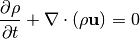
(2)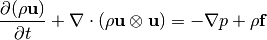
(3)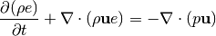
The governing equations used for the CFD calculations are the compressible Euler’s equations in Cartesian coordinates. The equations were introduced in differential form in equations (1)- (3), but for the finite volume discretization, the integral form of the equations is employed. The integral equations in vector form is shown in equation (4).
(4)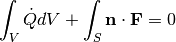
where,
(5)![Q = \left[ \begin{array}{c}
\rho \\
\rho u \\
\rho v \\
\rho w \\
e \end{array} \right],
\hspace{15pt}
F_n = \mathbf{n \cdot F} = \left[ \begin{array}{c}
\rho \bar{u} \\
\rho u \bar{u} +p n_x\\
\rho v \bar{u} +p n_y \\
\rho w \bar{u} +p n_z \\
e \bar{u} + p u_n \end{array} \right]](_images/math/4128486f267603876bb622424d3bd59c4c823b0d.png)
The vector 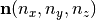 is the unit outward pointing normal of the surface of integration  . The dot on top of any variable denotes differentiation with respect to time. The fluid velocity vector is 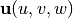 and the grid velocity is denoted by
. The dot on top of any variable denotes differentiation with respect to time. The fluid velocity vector is 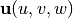 and the grid velocity is denoted by  . The quantity 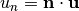 and 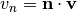 are the velocity components in the normal direction. Similarly, we have 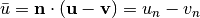.
. The quantity 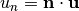 and 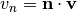 are the velocity components in the normal direction. Similarly, we have 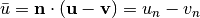.
Finite Volume Discretization¶
The volume integrals in equation (4) are evaluated using the cell center value 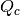 (piecewise constant) and the cell volume 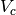 as shown in equation (6).
(6)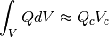

Piecewise-constant reconstruction
In this piecewise-constant reconstruction one has to solve a local Riemann problem at every edge indicated by the fractional indices 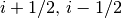 shown in figure Piecewise-constant reconstruction. The face average flux  (piecewise-constant) is approximated as the face center value and it is obtained by solving the Riemann problem at the cell edge (given the left and right states). Introducing the above approximations, the discretized equation can be written as shown in equation :eq:euler_src_integral_discrete.
(piecewise-constant) is approximated as the face center value and it is obtained by solving the Riemann problem at the cell edge (given the left and right states). Introducing the above approximations, the discretized equation can be written as shown in equation :eq:euler_src_integral_discrete.
(7)
The flux can be evaluated using an Approximate Riemann solver for example the Roe scheme, using the left and right states of a face 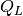 and 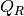 as shown in equation (:eq:roe_scheme).
(8)![\hat{F}_{approx}(Q_L,Q_R,S)=\frac{1}{2}\left[\hat{F}(Q_L,S)+\hat{F}(Q_R,S) - \|\tilde{A}(Q_L,Q_R,S)\|(Q_R-Q_L)\right]](_images/math/354cf5a27442ede5d4c014aae72fea69c28a1ac4.png)
The discrete equation shown in equation (7) can be rearranged and written in a semi-discrete form as an Ordinary Differential Equation (ODE) shown in equation (9). The operator  consists of the discrete flux operator and the contribution due to source term. The explicit Euler time integration method has been implemented to solve this ODE as shown in equation (10).
consists of the discrete flux operator and the contribution due to source term. The explicit Euler time integration method has been implemented to solve this ODE as shown in equation (10).
(9)![\dot{Q} = L[Q]](_images/math/20f9523902202e081cc447b01133f231b8f522c7.png)
(10)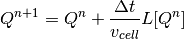
where, 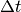 is the time step and 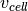 is the cell volume. 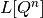 is the right hand side of the discrete equation (residue).
Local Time Stepping (LTS)¶
The solution is accelerated to steady state using the local time stepping (LTS). In equation (10) the 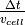 term is replaced by the CFL number (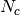) and local maximum eigenvalue integral as shown in equation (11).
(11)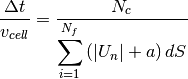
where, 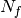 is the total number of faces in a cell and 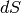 is the face area of the 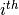 face.
Boundary Condition¶
The following types of boundary conditions have been implemented, namely,
- Supersonic Inflow
As the name suggests, these boundary conditions are imposed when the Mach number of the the flow entering or leaving the boundary of the computational domain is fully supersonic. Therefore, there is no influence of the downwind disturbances. One can make use of this property and prescribe the inflow/outflow boundary conditions. For a supersonic inflow boundary face, the flow parameters at the inlet are used to obtain the fluxes. For a supersonic outflow boundary face, the solution state extrapolated from within the interior computational domain is used for calculating the fluxes across that face.
- Slip-wall
The slip wall boundary condition physically imposes a zero mass flux crossing the rigid wall. This can be written mathematically as 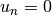. This immediately suggests the following numerical flux formulation for the wall boundary face,
(12)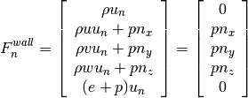
The pressure value at the wall boundary face is usually computed by extrapolation from the interior computational domain. The nearest cell centroid value extrapolation has been implemented in the present work.
- Riemann Extrapolation
The Riemann invariants for the 1D Euler’s equation (isentropic flow assumption) can be utilized as far-field boundary conditions by making a 1D flow assumption normal to the boundary face. If the far-field is sufficiently away from wall boundaries isentropic flow assumption is valid. The invariants 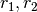 and 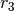 normal to a given finite volume interface is defined in equations shown below,
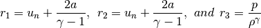
One can detect the direction of propagation at the far-field boundary based on the sign of the Eigenvalues, which are defined as,
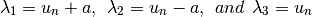
where, 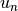 is the normal velocity to the interface and  is the speed of sound at the interface. Based on the signs of the two variables four different cases can be considered as follows,
is the speed of sound at the interface. Based on the signs of the two variables four different cases can be considered as follows,
- Supersonic Outflow (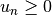 and 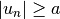)
The boundary condition is exactly same as that in previous section.
- Supersonic Inflow (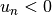 and )}
The boundary condition is exactly same as that in previous section.
- Subsonic Outflow ( and 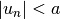)
In this case, 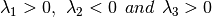, which means that two characteristic waves are outgoing and one wave is incoming. The boundary values are then determined as follows,

Note that the subscripts  and denote values normal/parallel to the boundary face, boundary cell values (unknowns), extrapolated value from interior and free-stream value respectively.
and denote values normal/parallel to the boundary face, boundary cell values (unknowns), extrapolated value from interior and free-stream value respectively.
- Subsonic Inflow ( and )
In this case, 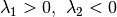 and 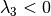, which means that one characteristic wave is outgoing and two waves are incoming. The boundary values are then determined as follows,

- Implicit non-reflecting boundary condition
Implicit boundary conditions are quite necessary for implementing Jacobian Free Newton-Krylov (JFNK) methods. Unlike the previous case, implicit non-reflecting boundary conditions fixes the normal boundary fluxes and not the boundary values. This way one ensures that the effect of boundary is implied in the residual calculation. Here one extrapolates the interior values for the left state and fix free-stream conditions as the right state and invokes the approximate Riemann flux solver to obtain the interfacial boundary fluxes and they are summed up to the neighboring cell residual. The implicit boundary described above is a weak boundary condition and hence is preferred more than the Riemann extrapolation due to the improved stability.